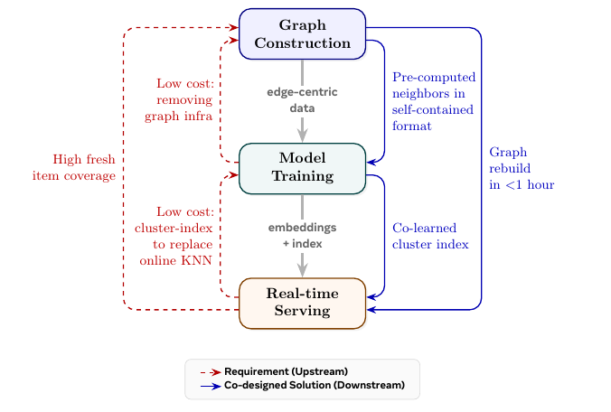

Contents · 10 sections
1What problem is it actually solving?2Pipeline overview: three stages placing demands on each other3Graph construction: where edges come from, and how hundreds of trillions shrink to hundreds of billions4Neighbors computed offline: PPR instead of online sampling5Training: a simple model6Serving: a cluster index instead of online KNN7Experiments: retrieval, index quality and ablations8Limitations as I see them9How a recommendation team could try it10VerdictSHARE
Teams that run graph-based retrieval should read this paper, because it removes two things most people assume they must pay heavily for: an online graph store with a sampling engine, and an online KNN service. Retrieval quality goes up rather than down. The core idea in one line: precompute neighbors offline with Personalized PageRank (PPR) and write them into the training data, train the cluster index together with the embeddings, and online similar-user lookup becomes a single cluster read. On Meta production data, user-embedding Recall@5 is 0.143 versus 0.038 for the GAT-DGI baseline, about 3.8×; online U2U2I serving cost drops 83%; 14-day A/B tests show up to +0.96% CTR and +2.75% CVR, and the system has backed more than 20 retrieval launches.
What problem is it actually solving?
Start with an illustrative scenario. A short-video platform wants a "what are people with tastes like yours watching right now" retrieval path, i.e. U2U2I: find similar users first, then take the videos they recently engaged with. The other path is U2I2I: take the videos a user engaged with, then find similar videos. Both only need embeddings that capture "who is like whom", which makes them a natural fit for graph models.
At Meta's scale, each of the three stages gets stuck:
| Stage | Naive approach | Where it breaks |
|---|---|---|
| Graph construction | Connect every co-engagement as an edge | The raw co-engagement graph has hundreds of trillions of edges and cannot be built |
| Training | Sample neighbors online from a graph store during training | Requires a full graph store and distributed sampling service; multi-hop sampling makes GPU memory swing unpredictably |
| Serving | Run KNN over similar users online | The authors found candidate users work best when restricted to those active in roughly the last 15 minutes; this pool changes every few minutes, online KNN needs thousands of machines, and a precomputed KNN table cannot keep up |
The authors' claim is that these three stages cannot be optimized separately: the requirements of one stage must be pushed back upstream.
Pipeline overview: three stages placing demands on each other

In data-flow order, the system looks like this:
| Stage | Input | What it does | Output |
|---|---|---|---|
| Graph construction | Clicks, likes, shares, purchases from the past 24 hours | Builds three edge types, dampens popular items, prunes edges, precomputes neighbors with PPR | Edge-organized training data that carries its own neighbors |
| Training | The data from the previous step, without touching any graph service | Contrastive training of user and item embeddings, plus a two-layer cluster codebook trained at the same time | Embeddings, plus a cluster code for each user |
| Serving | Cluster codes and the real-time engagement stream | Each cluster maintains a queue of "items recently engaged by active members of this cluster" | Online reads the queue directly, no KNN |
The whole graph is rebuilt every 3 hours, each build takes about 1 hour, and end-to-end latency from engagement to refreshed embeddings is about 2 hours. The sections below go through it in this order.
![Paper Figure 2: system architecture. A is graph construction: raw engagements go through pruning and popularity correction to form a graph with U-U, I-I and U-I edges, then PPR precomputes neighbors. B is training: the target node and its precomputed user and item neighbors each go through encoders, an aggregator combines them into the final embedding, trained with a contrastive loss. C is the index: the final embedding passes through two layers of residual quantization to get a two-level code, with a regularizer that prevents codebook collapse.](../../../figs/2026-07-28/personalization/2606.18379/arch.png)
Graph construction: where edges come from, and how hundreds of trillions shrink to hundreds of billions
The graph has only two node types, users and items, and all three edge types come from engagement data, with no social relations or knowledge graph:
- U-I edges: one edge if the user engaged with the item in the past T hours, weighted by a preset value per engagement type that reflects business value.
- U-U edges: two users are connected only if the number of items they both engaged with in the past T hours reaches a threshold . The weight multiplies the two users' engagement weights on each shared item, sums them, then takes a log. The log puts edges of heavy and light users on the same scale.
- I-I edges: symmetric to U-U, based on how many shared users engaged with both items.
The authors say they tried splitting one node pair into several finer relation types; the graph got larger without a matching gain, so each node-type pair keeps a single co-engagement relation.
Why dampen popular items? A popular item co-occurs with everything, so its edges reflect popularity rather than interest. The paper corrects I-I edge weights as follows:
is the raw edge weight from item i to j, the bracket is this edge's share of item j's total edge weight, and . The more popular j is, the smaller that share and the harder the edge is dampened. A hand-worked illustrative example: j is a viral hit with total edge weight 1000 and edge weight 10 with i, share 0.01, and 0.01 to the power 0.3 is about 0.25; j is a niche video with total edge weight 50 and the same edge weight 10 with i, share 0.2, and 0.2 to the power 0.3 is about 0.62. The same weight-10 edge keeps only about a quarter when it points to the hit and over 60% when it points to the niche video. After correction, i→j and j→i weights are no longer equal, and both directions are kept.
Pruning has two steps: U-U edges are kept only for about 100 million users selected by business value (updated daily), while U-I edges keep all nodes; then each node keeps only its top edges by weight. This takes the edge count from hundreds of trillions down to hundreds of billions. After pruning, nodes split into two groups: group one still has same-type neighbors in the graph, and these nodes with their edges form the "backbone graph"; group two has no same-type neighbors and appears only in the full graph.
Neighbors computed offline: PPR instead of online sampling
This is the most important trade-off in the paper. The authors argue that the structural signals similarity retrieval relies on change slowly, so neighbors can be computed offline, which means training needs no graph service at all.
The method borrows from PinSage: run Personalized PageRank (PPR) for each node on the backbone graph, approximated by random walks. Start R walks of length L from the node, with probability 0.15 of jumping back to the start at each step, then count which nodes are visited most and take the top user neighbors and item neighbors. PPR neighbors are not added to the graph as edges; they are handed to training only as a fixed-length neighbor table. The random walks run fully in parallel across billions of nodes.
PPR runs only on the backbone graph; group-two nodes are not in the backbone, so they get no PPR neighbors. The paper handles them in a single sentence: same-type neighbors are found with KNN instead, searching among group-one nodes with the embeddings produced by the previous training run and taking the nearest 50 (updated daily); item neighbors are simply the top-weight U-I edges. Applied to group-two users the rule is complete: similar users come from KNN, item neighbors from U-I edges. Applied to items in the second group, the KNN fallback gives same-type item neighbors, but the paper does not say where these items get their user neighbors; by the same logic they may come from the top-weight U-I edges, which is my inference.
The final output is organized by edge: each record is an edge, the features of both endpoints, and each endpoint's neighbors. During training, each edge randomly samples 10 of its 50 precomputed neighbors.
Why is offline better? Online sampling is latency-bound and usually limited to one hop or very shallow walks; offline you can run multi-hop PPR over the whole backbone graph and apply popularity correction along the way. The ablations below show that neighbor selection has a large effect.
Training: a simple model
The paper keeps the model deliberately simple. Each node's features (users: demographics and a sequence of recently engaged items; items: content type and ID-style features) first go through type-specific encoders; the target node, its K user neighbors and its K item neighbors are encoded separately and handed to an aggregator that produces the final embedding, dimension 256. The aggregator's input is the target node's own encoding plus the encodings of both neighbor types, and its output is the node's embedding; the paper does not say how this part of the model architecture combines the three inputs internally. Both the encoders and the aggregator are multi-head, each head producing its own embedding; during training these multi-head embeddings are used for negative augmentation (next paragraph), and at inference the heads' embeddings are averaged into the final result. The model learns shared encoders, which the paper calls an inductive setting, so unseen nodes can be encoded with the same parameters; but per the formula the final embedding also takes both neighbor types' encodings as input, so a new node must first get a neighbor table at graph-construction time.
The training objective is edge prediction: the two endpoints of an edge should be more alike than random nodes. Each positive edge gets 100 negatives of the same type as the destination, from three sources: nodes from other edges in the same batch, a rolling negative pool maintained across batches, and multi-head augmentation, where embeddings produced by different heads also count as extra negatives. The paper does not say how each embedding from different heads and nodes is paired for negative sampling. The loss is a weighted sum of margin loss (margin 0.1) and InfoNCE (temperature 0.06), computed separately for U-U, U-I, I-U and I-I edges and summed with weights, all learned automatically via uncertainty weighting.
The engineering payoff is a fixed batch size and predictable GPU memory; data loading, feature preprocessing and negative sampling run on CPU and overlap with GPU training.
Serving: a cluster index instead of online KNN
U2I2I is cheap: item embeddings change slowly, so I2I KNN can be precomputed offline. The expensive one is U2U2I. The authors assign each user to a cluster, and each cluster maintains a queue holding items just engaged by its recently active members. When an online request arrives, it only needs to read the latest items from the user's cluster; the paper calls this U2Cluster2I.
Where do cluster codes come from? Two layers of residual quantization. A codebook is a set of learnable representative vectors, each called a code, roughly corresponding to a region of the embedding space. The first layer finds the code in codebook closest to the user embedding and records its index ; subtracting that code from the embedding gives a residual, and the second layer finds the code in closest to the residual and records . is the cluster code. The paper uses 5,000×50, i.e. 250,000 clusters. With billions of users, a rough estimate is a few thousand to over ten thousand users per cluster on average (my own estimate). A cluster must be large enough that enough people remain after filtering out those inactive in the last 15 minutes, yet small enough that its members are actually similar; codebook size is the knob for this balance.
Why train it together with the embeddings rather than clustering afterwards? The authors say quantizing after training loses retrieval quality. Joint training adds two losses: the "reconstructed embedding" obtained by adding the two codes should be close to the original embedding; and the reconstructed embedding should also do well on edge prediction, i.e. the same contrastive loss is computed again on it.
How is codebook collapse prevented? Under streaming training, a few codes get used more and more while the others sit idle. The paper uses two tricks:
- A regularization loss. Code selections over the last 1000 batches give each code's historical usage frequency ; then each embedding in the current batch gets a soft assignment: compute its distance to each code, use as the score (, , so closer means higher), and pass the scores through softmax to get the probability of selecting each code; summing these probabilities per code over all embeddings in the batch and normalizing gives the current batch's usage distribution. The loss is the dot product of the two, so the more the current batch leans toward codes already heavily used historically, the larger the penalty.
- Biased code selection. Instead of the code with the highest selection probability, pick the one with the highest "selection probability divided by historical frequency". Illustration: code a has selection probability 0.5 and historical frequency 0.02, ratio 25; code b has selection probability 0.4 and historical frequency 0.004, ratio 100, so b is chosen. Rarely used codes are more likely to be picked. The paper does not say whether this biased code selection rule is used both in training and when generating serving cluster codes, or whether some stage still picks the nearest code; the two rules can pick different codes, so keep them consistent in your own implementation. The authors add that the slight scattering this causes acts as a bit of exploration on discovery-oriented surfaces.
Experiments: retrieval, index quality and ablations
All experiments use Meta production data. The authors say public datasets like Amazon and MovieLens are orders of magnitude smaller and cannot expose the scale problems, so they were not used.
First, are the user embeddings good? The paper describes this evaluation in one sentence: sample 100,000 users, use the embeddings to take the nearest 100 similar users for each, then compute Recall@K against next-day real engagements. The idea is U2U2I itself: if similar users are found accurately, what they engaged with is more likely to be what the target user engages with the next day. Whether K cuts similar users or items, and how similar users' engagements are ordered into a list, the source stops at that one sentence, so the numbers below are fit for comparing the three methods side by side, not for comparing against Recall in other papers. Baselines are GAT-DGI (GAT with Deep Graph Infomax self-supervised pretraining, trained only on the user-item bipartite graph) and HSTU (which the paper describes as a trillion-parameter sequence model whose embeddings are optimized for retrieval with a contrastive objective).
| Method | Recall@5 | Recall@10 | Recall@50 | Recall@100 |
|---|---|---|---|---|
| GAT-DGI | 0.038 | 0.066 | 0.180 | 0.251 |
| HSTU | 0.013 | 0.024 | 0.085 | 0.135 |
| RankGraph-2 | 0.143 | 0.209 | 0.399 | 0.482 |
GAT-DGI has a more complex model, but with only a bipartite graph and no PPR neighbors its recall is several times worse. This shows that for this task, how the graph is built and neighbors are chosen matters more than how complex the aggregator is. HSTU is worst; the authors read this as the sequence model learning a different kind of signal that complements graph-structural similarity.
The item-embedding evaluation is split by time: day-N embeddings predict I-I co-engagement edges appearing on day N+1, with 1,000 sampled edges for Recall@K. Baselines are PyTorch-BigGraph (a mature large-scale graph embedding system) and HSTU. At Recall@100, RankGraph-2 scores 0.775 and PyTorch-BigGraph 0.374, about 2.1×, showing the gap holds on the item side too.
Next, does the cluster index lose quality? The authors compare three embeddings: the original embedding, the reconstructed embedding obtained by adding the two codes, and the reconstructed embedding with both anti-collapse tricks removed. The evaluation setting is edge prediction: given a positive edge, one endpoint's embedding is compared by similarity against the true other endpoint and against negative nodes, with Hitrate@K computed for each of the three embeddings. The less it drops with reconstructed embeddings, the less is lost by replacing the original embedding with the cluster code.
| Embedding used | Hitrate@1 | Hitrate@5 | Hitrate@10 |
|---|---|---|---|
| Original embedding | 0.871 | 0.981 | 0.997 |
| Reconstructed embedding | 0.846 | 0.973 | 0.994 |
| Reconstructed embedding, no anti-collapse | 0.717 | 0.877 | 0.931 |
The reconstructed embedding is only slightly below the original; without the two anti-collapse tricks Hitrate@1 falls to 0.717. The authors say codebook utilization reaches 100% with anti-collapse and drops noticeably without it. This shows codebook collapse is a real problem under streaming training, and without handling it the cluster codes are unreliable.
The ablations separate how much each of three graph-construction design choices contributes. Each ablation changes only one variable, with everything else as in the full model:
| Change (Recall@5) | Result |
|---|---|
| U-I edges only | 0.052 |
| U-I plus I-I | 0.089 |
| U-I plus U-U | 0.115 |
| All three edge types | 0.143 |
| Random neighbors | 0.045 |
| Top-K neighbors by edge weight (one hop only) | 0.098 |
| PPR neighbors | 0.143 |
| Item side, no popularity correction (Recall@100) | 0.620 |
| Item side, with popularity correction (Recall@100) | 0.775 |
U-U edges help user embeddings more than I-I edges; random neighbors fall almost back to bipartite-only levels; popularity correction lifts item Recall@100 from 0.620 to 0.775. All three are graph-construction changes, consistent with the authors' claim that investing in graph construction pays off more than investing in the model.
Finally, online. Each of two large surfaces ran a 14-day A/B test in which the treatment adds RankGraph-2 as an extra retrieval path on top of the existing ones (collaborative filtering, content-based retrieval and other embedding retrieval); all results are significant:
| Retrieval | Surface | CTR | CVR |
|---|---|---|---|
| U2I2I | Surface 1 | +0.96% | +2.75% |
| U2I2I | Surface 2 | +0.33% | +0.76% |
| U2U2I | Surface 1 | +0.40% | +1.01% |
| U2U2I | Surface 2 | +0.20% | +0.17% |
In addition, after U2U2I replaced the approximate KNN service with the cluster index, CTR and CVR stayed on par with KNN, while serving machines dropped from thousands to a small fraction, an 83% cost reduction.
Limitations as I see them
First, "on par with KNN" for the cluster index is a single sentence. The online comparison gives no concrete CTR or CVR deltas, and offline only original versus reconstructed Hitrate is compared, not how much the items retrieved by "reading the cluster queue" differ from those retrieved by KNN. The 83% saving is a hard number; the quality cost cannot be checked by readers.
Second, the baselines differ from this paper in more than the model. GAT-DGI is trained only on the bipartite graph, and HSTU's embeddings come from a sequence model trained in a separate system; although also optimized for retrieval with a contrastive objective, it does not use this graph, and its Recall@5 is only 0.013. The 3.8× looks more like "the whole recipe" versus "someone else's off-the-shelf approach" than two models compared on the same graph. The item evaluation samples only 1,000 edges, and none of the tables report variance.
Third, the scope is narrow, as the authors admit. It is designed for similarity retrieval; direct user-to-item retrieval relies more on real-time behavioral features, where ranking models may fit better; neighbors are fixed offline, so tasks that need query-dependent neighbors cannot use it; and a 3-hour rebuild cycle may be too slow for extremely time-sensitive surfaces. Group-two neighbors also depend on the previous run's embeddings, so a new system needs another way to bootstrap this step.
How a recommendation team could try it
- Validate neighbor selection offline first. On your existing graph embeddings, swap only online sampling for an offline PPR-precomputed neighbor table and watch Recall@K. This step is the cheapest and says the most about whether to continue.
- Then add edges and popularity correction. Add U-U and I-I co-engagement edges to the bipartite graph, apply popularity correction to I-I edges (start tuning from 0.3), and check user-side and item-side retrieval separately.
- If you have U2U2I and KNN serving is expensive, build the cluster index. Train two-layer residual quantization jointly with the embeddings, always add anti-collapse, and monitor codebook utilization; before launch, compare offline the overlap between what cluster-queue reads and KNN retrieve.
- Run the online A/B as "add one more retrieval path", matching the paper's setup, and record serving machine counts to work out the savings.
Verdict
For similarity retrieval, effort spent on graph construction and neighbor selection pays off more than switching to a more complex graph model.
| Dimension | Assessment |
|---|---|
| Importance of the problem | High. Graph construction, training and serving costs for billion-scale graph retrieval are the main barriers to deployment |
| Novelty of the method | Medium. PPR neighbors, residual quantization and co-engagement graphs are not new; what is new is designing the three stages together around each other's needs |
| Experimental evidence | Medium. Offline, ablations and online A/B on two surfaces, but all on internal data, baselines not on the same graph, and no numbers for the index-versus-KNN quality comparison |
| Engineering cost | Medium. Removes the graph service and online KNN, but requires maintaining a 3-hourly graph-construction pipeline and PPR computation |
| Worth trying? | Teams that already run U2U2I or U2I2I retrieval and are burdened by graph-service or KNN costs should try offline PPR neighbors first |
How did this read for you?
Hoot made a note. Thanks for the feedback.
One tap, no sign-in; tap again to undo. Only anonymous counts are kept, never who you are.
Discussion
Add experiment details, reproduction notes or a different take. Requires a GitHub sign-in.
Loading the discussion…